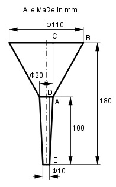

Aufgabe 285 Wie groß ist der Blechbedarf A für den Trichter, wenn man für die Nahtstellen 5% Zuschlag ansetzt?

Der Trichter besteht aus dem Kegelstumpfmantel K1 und dem Kegelstumpfmantel K2. Satz von Pythagoras im Dreieck ABC: DC = 180 mm - 100 mm = 80 mm r1 = 110 mm/2 = 55 mm r2 = 20 mm/2 = 10 mm BC = r1 - r2 = 55 mm - 10 mm = 45 mm AB2 = BC2 + DC2 = 452 mm2 + 802 mm2 = 8 425 mm2 |√ AB = 91,8 mm K1 = л * AB * (r1 + r2) K1 = л * 91,8 * (55 + 10) mm2 = = 18 736 mm2 = 187,36 cm2 Satz von Pythagoras im Dreieck DEA: r3 = 10 mm/2 = 5 mm DA = r2 - r3 = 10 mm - 5 mm = 5 mm EA2 = DA2 + ED2 = 52 mm2 + 1002 mm2 = = 10 025 mm2 |√ EA = 100,1 mm K2 = л * EA * (r2 + r3) K2 = л * 100,1 * (10 + 5) mm2 = = 4 714 mm2 = 47,14 cm2 5% Zuschlag bedeutet: Prozentfaktor 1,05 A = 1,05 * (K1 + K2) = = 1,05 * (187,36 cm2 + 47,14 cm2) = 246,2 cm2